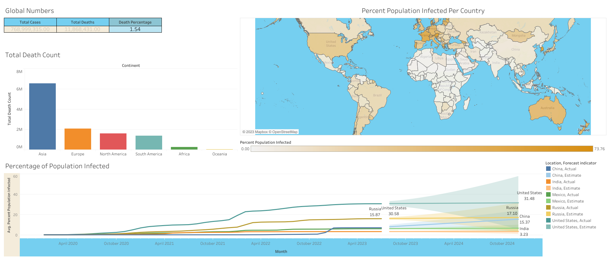
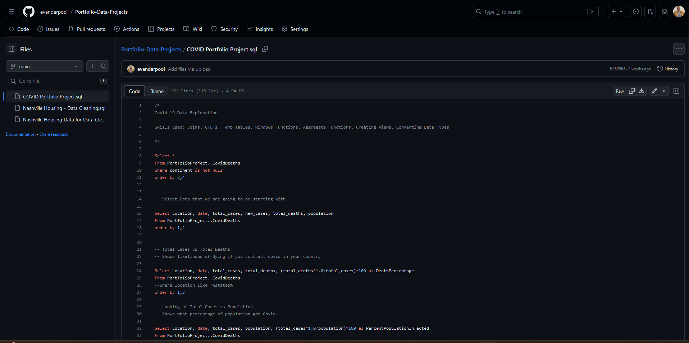
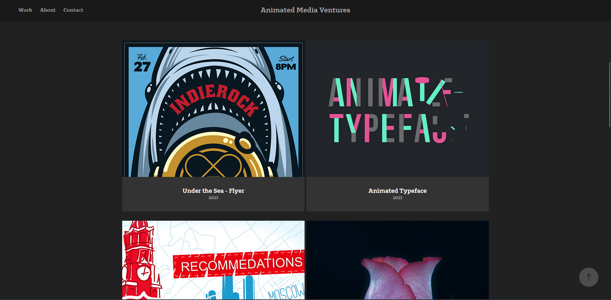
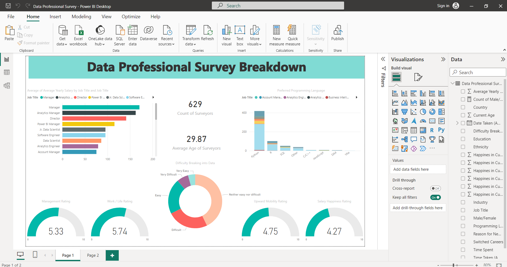

August 05, 2023
Project Summary: The COVID-19 Dashboard created using Tableau is a comprehensive data visualization tool that provides real-time insights and updates on the global COVID-19 pandemic.
This interactive dashboard offers users a user-friendly and informative platform to explore key metrics, trends, and patterns related to the spread and impact of the virus..


Project Summary:
In the "Data Cleaning for Nashville Housing Data" project, I tackled the task of cleaning and preparing raw data related to Nashville housing using SQL.
This project was designed to highlight the crucial but often overlooked skill of data cleaning within the realm of Data Analysis.
By addressing data quality issues and refining the dataset, I aimed to create a solid foundation for more accurate and insightful
analyses

Project Summary: In this project, our goal is to leverage SQL to perform comprehensive Data Exploration within the context of analyzing COVID-19 data. Data Exploration is a vital skill in the Data Analyst community, often overlooked but essential for gaining valuable insights from raw datasets. By applying SQL techniques to COVID-19 data,
we aim to not only enhance our analytical capabilities but also contribute to the global understanding of the pandemic's impact.

Project Summary: Bike Purchase Analysis based on Average Income. The Bike Data project aims to analyze
bike purchases using various metrics and their correlation with average income.
The project was implemented using Tableau, a powerful data visualization tool, to present the
insights in an interactive and visually appealing manner.

Project Summary: I undertook the creation of a wide range of graphic and video assets using various Adobe software programs.
The goal was to showcase my proficiency in these tools while producing high-quality and visually appealing content.
The project involved the following Media Programs: Adobe Illustrator, Adobe Photoshop, Adobe InDesign, Adobe After Effects, and Adobe Premiere Pro.

Project Summary:
The Bike Purchases Data Analysis project was aimed at analyzing and visualizing bike purchase data using Tableau.
The project involved exploring various metrics related to bike purchases, such as sales, customer demographics, income, and regional trends.
The goal was to provide insights that could guide business decisions and marketing strategies for the bike company.

Project Overview: The Data Professionals Survey focused on surveying and analyzing the preferences and trends within the data industry. The survey encompassed a wide range of metrics concerning data professionals, including job roles, skill sets, salary ranges, and geographical distribution. The objective was to extract valuable insights to inform workforce planning and career development strategies within the data field.